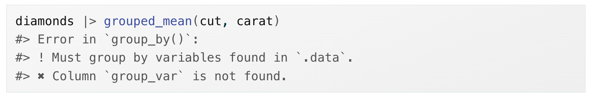

Functions: The details
Environmental Data Analysis and Visualization
Recall, to turn your code into a function you need three things:
- A name
- The arguments
- The body
Mutate functions
Mutate functions
Functions that work well inside of mutate() and filter() because they return output that is the same length as the input.
An example: calculate z-score
Z-scores rescale a vector to have a mean of zero and a standard deviation of one. It can be useful when you want to do stats on datasets with very different value ranges.
An example: calculate z-score
Turn it into a function:
An example: recode values in a vector
Create a function called clamp() that recodes values in a vector to be equal to some user-supplied minimum or maximum value if they are less than or greater than the min/max.
Have:
[1] 1 2 3 4 5 6 7 8 9 10Want:
[1] 3 3 3 4 5 6 7 7 7 7An example: recode values in a vector
Create a function called clamp() that recodes values in a vector to be equal to some user-supplied minimum or maximum value if they are less than or greater than the min/max.
An example: mutate function with character data
Make the first letter of each value upper case.
Have:
[1] "hello" "goodbye" "see ya" Want:
[1] "Hello" "Goodbye" "See ya" An example: mutate function with character data
This one’s a bit more complicated. First work out the code outside of the function.
Ultimately, we can use the str_sub() function to sub out the lower case letter with an upper case letter.
From the help file:
str_sub(string, start = 1L, end = -1L, omit_na = FALSE) <- value
An example: mutate function with character data
We can use the str_sub() and str_to_upper() functions to programatically determine the replacement value.
An example: mutate function with character data
Now put it all together.
An example: mutate function with character data
It worked. NOW make it a function.
Summary functions
Summary functions
Return a single value for use in summarize()
An example: calculate standard error
se = sd / \(n^{2}\)
An example: standard error
Summary function with multiple vector inputs
Mean absolute percent error to compare model predictions with absolute values:
Data frame functions
Data frame functions
Take a data frame as the first argument, some extra arguments that say what to do with it, and return a data frame or a vector.
Useful if you find yourself using the same wrangling or plotting pipeline for different data or subsets of data.
Get to know tidy evaluation
Have:
# A tibble: 53,940 × 10
carat cut color clarity depth table price x y z
<dbl> <ord> <ord> <ord> <dbl> <dbl> <int> <dbl> <dbl> <dbl>
1 0.23 Ideal E SI2 61.5 55 326 3.95 3.98 2.43
2 0.21 Premium E SI1 59.8 61 326 3.89 3.84 2.31
3 0.23 Good E VS1 56.9 65 327 4.05 4.07 2.31
4 0.29 Premium I VS2 62.4 58 334 4.2 4.23 2.63
5 0.31 Good J SI2 63.3 58 335 4.34 4.35 2.75
6 0.24 Very Good J VVS2 62.8 57 336 3.94 3.96 2.48
7 0.24 Very Good I VVS1 62.3 57 336 3.95 3.98 2.47
8 0.26 Very Good H SI1 61.9 55 337 4.07 4.11 2.53
9 0.22 Fair E VS2 65.1 61 337 3.87 3.78 2.49
10 0.23 Very Good H VS1 59.4 61 338 4 4.05 2.39
# ℹ 53,930 more rowsGet to know tidy evaluation
Want: Calculate the mean of a variable (mean_var) based on a grouping variable (group_var) from a dataframe df.
Get to know tidy evaluation
Why do we get an error?
Get to know tidy evaluation
Why do we get an error?
When function arguments indirectly refer to the name of a column, R takes it literally.
Get to know tidy evaluation
What we want to happen:
- group by
cut(or any other grouping variable) - calculate mean
carat(or any other numeric variable)
Get to know tidy evaluation
Tidy evaluation allows us to refer to variable names directly when using tidyverse functions. However, special treatment is required when you use functions that use tidy evaluation.
{{}}are the special treatment we need to applyHow do you know which functions use tidy evaluation? You’ll know if you get an the error that your variable wasn’t found. You can also look in a function’s help file. Under Arguments,
<tidy-select>or<data-masking>will be listed.
Proper data frame function with {{}}
Want: Calculate the mean of a variable (mean_var) based on a grouping variable (group_var) from the dataframe df.
The {{}} tells R to use the value you supplied for the grouped_var and mean_var arguments, not the literal argument names.
Proper data frame function with {{}}
Want: Calculate the mean of a variable (mean_var) based on a grouping variable (group_var) from the dataframe df.
Plot functions
Plot functions
Want: I need to make a lot of histograms with different binwidths.
Make a plot function

Optional: Add components after running plot function
Our histogram() function returns a ggplot2 plot, meaning you can still add additional components if you want. Just remember to switch from |> to +:

Plot function with more variables
Function to eyeball whether or not a dataset is linear by overlaying a smooth line and a straight line:
Make a function to wrangle then plot
Use the fct_infreq() function to sort factor levels according to frequency, then plot in a horizontal bar chart:

:= The “walrus operator”
- You can only use
=in a tidy function likemutate()when referring directly to a variable name:
mutate(new_variable = ...) - If you want to indirectly use a user-supplied variable name as an argument in your function,
:=let’s R know to look for the argument name supplied:
mutate({{var}} := ...)
Label plots in a function based on user inputs
Add a plot title that labels the variable and binwidth: